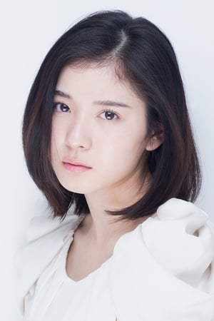

Mayu Matsuoka is a Japanese actress. She is the older sister of Hina Matsuoka.
- Gender: Female
- Birthday: February 16, 1995

| |
Mayu Matsuoka is a Japanese actress. She is the older sister of Hina Matsuoka.
|
 |
|---|
 |
Kimia | Pokemon Movie 19: Volcanion and The Mechanical Marvel | Kimia is the princess of Azoth Kingdom and Raleigh's older sister. She is a descendant of Nikola. She is concerned about her brother. She is highly actives and utilizes a number of machines to travel around. |
 |
Shouya Ishida | A Silent Voice | Shouya Isida is the boy who bullied Shouko Nishimiya. Since he has been ostracizated for years, he becomes more socially awkard. He can be bully but has a caring side as well. Mayu Matsuoka voiced the younger Shouya Ishida. |
Go Back to Main Page |
Go Back to Homepage |
|
|
|
OR |
|